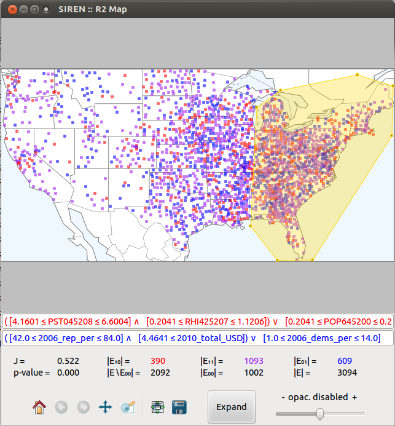

Using Siren, a user can explore data of his interest by interactively mining, visualizing and editing redescriptions.
The main functionalities of Siren can be categorized into mining, visualizing and editing.
At the core of Siren is the ReReMi redescription mining algorithm. Various modes of interaction with the mining algorithm are possible through the interface.
Siren offers a number of different visualizations.
A parallel coordinates plot represents the values taken by the entites for the variable appearing in the queries. It allows to easily visualize the impact of the queries conditions on the support of the redescription.
The axis projection and a number of data projections from the scikit-learn package allow to highlight different aspects of the data.
When the entities are geographic locations, we qualify the redescriptions as geospatial. Such redescriptions can be displayed on a map to show the locations where both queries hold, only the left hand side query holds and only the right hand side query holds.
Existing redescriptions can be edited and the visualization and statistics will be recomputed and changes reflected in the original redescription in the list and other visualizations of that same redescription.
It is also possible to build a new redescription from scratch.
Dragging the interval boxes in the parallel coordinates plot allows to edit the redescription interactively.

The user can select single entites from a view by clicking the corresponding dot/line in a view.

Furthermore, he can select a subset of entities by drawing a enclosing polygon directly on the view.
Siren --- Last modified: Wed 15 Jan 2014, galbrun@cs.helsinki.fi